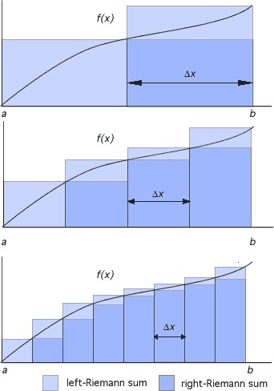

Week 14
"After the United Kingdom left the European Union at the start of this year, checks and tariffs were introduced on some goods moving from mainland Britain to Northern Ireland as the province now borders the bloc via EU member Ireland.
British Prime Minister Boris Johnson had promised there would be no hard border between Ireland and Northern Ireland as result of Brexit, and unfettered trade between the province and the rest of the United Kingdom would continue.
But critics of the departure deal's Northern Ireland Protocol say a border is now in effect in the Irish Sea, leaving unionists, who want to stay in the United Kingdom, feeling betrayed"
"China's factories automate as worker shortage looms"
"WHO says more than 87% of the world's Covid vaccine supply has gone to higher-income countries"
"@transport_urban
German operator @ruhrbahn announces the intention to purchase 258 #hydrogen fuel cell buses for Essen and Mülheim. A first bus is undergoing tests"
I traveled by train from Lyon to Montpellier once, comf. fast trip.
SNCF = French Rail
#SNCF announced yesterday that it had ordered 12 #hydrogen #trains. They work in dual mode (with electric traction under catenaries and in hydrogen mode on non-electrified lines). Range 600 km. The first tests end of 2023 and in service in 2025. SNCF uses almost 1,100 trains. #H2 pic.twitter.com/qsYfZoxKgk
— Hydrogfan (@hydrogfan) April 9, 2021
Sounds From The Ground - Clover #music
Gov provides the seed. Without the seed, the infra, noones got nothin, you is broke
"[I]n 1965, NASA funded a project to develop a general-purpose finite element program by a group in California led by Dick MacNeal. This program, which came to be known as NASTRAN, included a large array of capabilities, such as two- and three-dimensional stress analyses, beam and shell elements, for analyzing complex structures, such as airframes, and analysis of vibrations and time-dependent response to dynamic loads. NASA funded this project with 3 [mil] (like 30 [mil] today). The initial program was put in the public domain, but it had many bugs. Shortly after the completion of the program, Dick MacNeal and Bruce McCormick started a software firm that fixed most of the bugs and marketed the program to industry. By 1990, the program was the workhorse of most large industrial firms and the company, MacNeal-Schwendler, was a $100 million company"
H₂ Fuel cells are becoming increasingly sought after by the Government departments in India due to their high reliability, low maintenance, and massive logistical advantages especially where conventional forms of energy cannot be relied upon. @fc_tecnrgy https://t.co/Qe2vDQw9Qk
— Fuel Cell India 🇮🇳 (@FCIndia_) April 8, 2021
"@divert_thruster..
Taiwan took delivery of 23 TK-III missiles this year"
Reuters: "Taiwan says may shoot down Chinese drones in South China Sea"
"@CNBCnow
State Department says U.S. considering a joint boycott with allies of the 2022 Winter Olympics in Beijing"
Simulation is becoming more prevalent. Even for airplane manufacturers.. they started to use wind tunnels less and less, and rely more and more on simulation. Sims can get incredibly realistic.
Good stuff..
Wiki: "Schrödinger, Inc. is an American life sciences and materials science company founded in 1990 that develops software for computational chemistry and has a pipeline of collaborative and internal drug discovery programs"
. @everfuel will plan, install and operate an optimised, scalable hydrogen fuelling solution for a brand-new zero emission ship which is expected to consume approximately 1,000kg of #hydrogen per day. #H2View #hydrogenmobilityhttps://t.co/cEXdC5OIiw
— H2 View (@h2_view) April 8, 2021
Cantoma - Overtime #music
"Bus hijacked by protesters and set alight on sixth night of unrest in Northern Ireland"
AstraZen deaths due to side effect seem minimal
"Taiwan worked with other democracies to help its diplomatic ally Paraguay get Covid-19 vaccines after China put pressure on the South American country to ditch Taipei in exchange for shots, and India stepped in to help, Taiwan's foreign minister said"
"@_NPROXX
NPROXX is currently completing the manufacture of an innovative hydrogen fuel tank system that is designed to power the world’s largest mine haul truck"
"In a nutshell, the natural geological process of scrubbing carbon dioxide from the air works like this: carbon dioxide dissolves into rainwater, which then falls on rocks. Over time, rocks absorb carbon dioxide, consuming the gas and creating a mineral-based bicarbonate akin to baking soda that gets washed into the ocean. As effective as it may be, it’s also a glacially slow process that can take hundreds of centuries, Kelland notes. 'We don’t have 100,000 years to fix this problem,' he says. 'How can we speed that process up? Effectively, that's what our process does.' Planetary Hydrogen’s patented system, dubbed SeaOH2, uses an electric current to split ocean water molecules into hydrogen and oxygen.
Known as electrolysis, that process isn’t groundbreaking in itself. But by adding a mineral salt to the electrolysis cell, the company’s engineers have created an atmosphere-scrubbing compound called mineral hydroxide as a waste product. The hydroxide binds with carbon dioxide, effectively “capturing' the greenhouse gas while producing hydrogen as a potentially lucrative byproduct"
"@Dr__Dix
I just taught a class where only 5 students showed up, none of them had their cameras on, and only 1 student spoke when I asked questions.
Y'all I had videos, gifs, activities. I came with smiles and jokes.
It was the most dejected I have felt while teaching in the pandemic.
@rockswhisperer
I went with Asychronous recorded lectures. Watch when it is convenient for you. I use the lecture time for come in if and when you need help. Do you really need to be in class at 9 AM to hear me...or does watching a recording at 11 pm work for you and your career goals...
@AnnieBode1
this asynchronous stuff is working great for my son. He is a night owl
@stefan_seuring
I also use pre-recorded lectures and have good feedback from students"
"@Andrew__Roth
Russia is moving a large force toward the Ukrainian border, Navalny is in jail for Yves Rocher, Jen Psaki is the press secretary, and I have been transported back in time to 2014"
"@josheidelson
New: After years of mostly unsuccessful efforts, Uber, Lyft and peers are poised to secure deals with major unions, just in time to help defuse threats from the new Biden Administration"
"@hazergroupltd
A new report has detailed exactly how Australia’s current gas regulations can be modernised to facilitate the future use of hydrogen, biomethane and other potential future fuels"
Util code to report attacks on a specific country on a specific month. Israel attacks Syria regularly it seems, w some hard kills too.. Dam
import pandas as pd
def country_attacked(mon, country):
url = 'https://ucdp.uu.se/downloads/candidateged/GEDEvent_v21_0_%d.csv' % mon
df = pd.read_csv(url)
df1 = df[(df['side_b'] == 'Government of %s' % country)]
g = df1[['side_a','deaths_b','side_b']].\
groupby(['side_a','side_b']).\
agg({'side_b':'count', 'deaths_b': 'sum'})
g.columns = ['incidents','deaths']
return g
print (country_attacked(1, 'Syria'))
print (country_attacked(2, 'Syria'))
incidents deaths
side_a side_b
Government of Israel Government of Syria 2 57
incidents deaths
side_a side_b
Government of Israel Government of Syria 2 9
K.. as long as there is FCEV refueling next to these BEV chargers, it's fine. BEVtards will get crushed in due course.
"US Senate Committee Introduces Clean Vehicle Charging Legislation.. Earlier this week, a group of cross-party US senators introduced the Securing America’s Clean Fuels Infrastructure Act (the Act) to promote investments in clean vehicle infrastructure. The types of infrastructure supported by the legislation include electric vehicle charging stations and hydrogen refueling stations for fuel cell vehicles"
"@SecYellen
By choosing to compete on taxes, we’ve neglected to compete on the skill of our workers and the strength of our infrastructure. It’s a self-defeating competition, and neither President Biden nor I are interested in participating in it anymore.
We want to change the game"
Context? There was huge contraction due to pand so it shld not be surprising to expect growth, just going back to where econ was previously wld give major "growth".
"Record growth is expected this year, all around the world, w rates not seen since 60s"
Good docu on Soviets, Russia
Moscow's empire - rise and fall (2/4)
Moscow's empire - rise and fall (3/4)
Moscow's empire - rise and fall (4/4)
#2021PortugalEU
"@H2Europe
#GreenHydrogen is in our view one of the most promising techs to eliminate hard to abate emissions from industrial & transport sectors. - R. Mourinho Felix, VP, [European Inv Bank]"
2018 trade balance with CH top trading partners, Neg for deficit, pos for surplus; so simple sum shld give the net received, in billions,
defc = [419.6,275.8,177.1,-28.6,206.1,-74.8,-112,-53.6,21.3,-12.7,\
-29.9,52,1.5,-3.1,10.8,6.2,10.9,12.8,-13.4,16.4,-9.5]
np.sum(defc)
Out[1]: 872.9
This USD u can spend, to buy the steel for those ghost cities.. But export-dependency is just another dependency, it can get cut
"@gideonrachman
Soros-backed Central Europe University (CEU) is forced out of Budapest. In its place comes Fudan University from China
'@eublogo #Hungary will make 1 of the largest investments in the higher education in decades financed by #China'"
"@gabriel_zucman
Global effective corporate income tax rate (all taxes included: federal + state + foreign) of the largest US companies, as printed in their 2020 annual reports:
- Amazon: 11.8%
- Apple: 14.4%
- Alphabet: 16.2%
- Facebook: 12.2%"
Stellantis to deliver Europe's first series manufactured vehicles to European markets still this year:https://t.co/AUNs2Wny1b
— Reiner (@H2FCEV) April 6, 2021
with large volume mass manufactured FC stacks in the coming years:https://t.co/IfZFpeDsxw
BTC specifically is badly designed but the next crypto cld remedy that, fix the warts.
Maybe 1 cld see a crypto as holding a ticket that gets u into a payment system, and the system is the value.. It is sorta circular tho.. why would someone want to pay with a crypto? Bcz there are others on it.. U get on it, then more might choose it for payments..
NR never runs out of ways of hitting this thing, BTC.
"@business
Bitcoin is a 'speculative self-fulfilling bubble' without any feature of an asset, says Nouriel Roubini"
"@ForeignAffairs
Nothing less than a bold new regime of domestic and international taxes will save wealthy democracies and economies from the distortions and dangers of rampant inequality, write @JosephEStiglitz, @toddntucker, and @gabriel_zucman"
The solution is more / better speech. Meddling with section 230 wld hamper it IMO.
"Disinfo Wars: Fixing the Media’s Fake News Problem A toxic focus on misinformation has taken over the media ecosystem"
It's like arguing for the price of oil is high or low disregarding the entire security apparatus to bring it into the market.
Water is more abundant and easy to process, jagoff. Even if water was tad more harder to find, process, one is still needed more than the other. Effin fin guy.. Sees only what he is allowed to "bet" on, that is his world...
Finance guy: "They say water is in nature and it's free. Diamonds also occur in nature but they are not free"
The worst Mission Impossible is the second..? Nah man... it is definitely the third. The Jar Jar one... It is objectively bad.
I have zero interest in approaches that cannot be scaled up. Works on little toy examples in 2D not 3D? Pass.
Sounds like a culture code is in play here. French cultural tug of war is between freedom and privelege. See Rapaille.
"Covid: Paris police probe 'secret luxury dinner parties'"
"@BFMTV
Covid-19: seven in ten French people approve of the measures announced by Emmanuel Macron, but almost half plan to break the new rules"
Unions lost a lot of power after 70s. The left sufered due to losing org structure and leadership. Politicians themselves like that single contact to be lobbied by, u cant have bunch of random ppl running around trying to make policy, some kind of filter is necessary.
Haha.. few Byzantian music samples below.. sounds awfullly like the so-called "Turkish" art music, sanat müziği.
Song 1, Song 2, Song 3, Song 4, Song 5, Song 6
Not surprisingly the same company caught cheating in an emission scandal.. Biatch!
Hah
"@H2_MOBILITY_DE
3 out of the 5 biggest automakers worldwide have started serial production of FCEVs. And yet Volkswagen AG still claims, that #hydrogen and #fuelcells cells have 'no market maturity'"
All of a sudden I want to listen to Winger 😶
Bcz of Bono? That's funny
"@meatheadsadie
Every - single - time I hear 'Mysterious Ways' by U2, my brain always yells “BONERRRRR! BONERRRRRR! TIME FOR DINNERRRR!” like Beavis"
A high global minimum tax can change the face of globalization—by making its main winners (multinational companies) pay more in taxes, instead of them paying less and less
— Gabriel Zucman (@gabriel_zucman) April 5, 2021
I'm old enough to remember when this idea was deemed utopian, so could not be happier to see this! pic.twitter.com/tDSZGEkLXt
Words like "summation" can be misleading.. We are computing a "smart sum", a sum that takes into account the upper boundary. Or a smart multiplication.
How about the top part? They are not the same. Their upper boundary changes as we go to right, depending on the function we are integrating, so it's not simple sum.
Pay attn that integration result too, anything above first degree will give you polynomial of deg higher and including than 2 = nonlinearity.

"If we think of integration of regular functions, they look like addition of simple components, side by side, wout flipping"
"@mattblaze
Mark my words, this API decision from the Supreme Court is going to lead straight to gangs of lawless youth roaming the streets and downloading cars"
"Google v Oracle: Supreme Court declares Google's code copying fair"
New streaming device counts ppl in the room? Seriously.
"@Sean8UrSon
just got this frightening press email
IT COUNTS PEOPLE IN THE ROOM SO IT CAN CHARGE PER PERSON??!?!
capitalism is fucking exhausting"
"Big Pharma did not save the day.. The industry is celebrating a great PR win—but Big Pharma's iron grip on intellectual property could hinder the achievement of worldwide protection against Covid-19"
Sure I tie lots of thing into a digi payment, eg UBI. Monetary system is at the center of many things #muneee
Patreon is not good enough, ppl still have to signup to this particular service. Monetized likes, naming all needs to be integrated into an omnipresent payment scheme.
Docu shows challenges around paying for content in a post-industrial era. My take: we need voluntery, "monetized likes" scheme tied to a new crypto. Fast payment tech, connect to a naming system (akin to Twitter checkmark), then while listening to a song (downloaded from .. wherever), if liked, u send small payment to just a name. Bee Gees? Weekend? Send it to that name and it gets routed to the artist. Or even send it to a work (a song, or a movie), and payment gets divided up automatically behind the scenes according to a formula.
Great Bloomberg docu on history of file sharing, MP3, its effect on the music biz.
Archimedes circle area formula invention is not covered at schools.. Sad state of our ed system.. Stuff that should be taught first arrives last. It is as if they don't want innovative, free-thinking people.
Ill Boogs - Super Suede #music
"I read somewhere that Calculus is all about dividing something into pieces and putting it back together.. In terms of the basis of innovation, doesn't that sound like simple addition?"
It's true. See
"@rabrowne75
'Years later,' Richard Nixon wrote in the 1980s, 'I talked to Eisenhower about Suez; he told me it was his major foreign policy mistake.'"
Were they waiting for muneee? The Benjamins?
A year ago? Why did it take so long for a wider rollout? Testing shouldn't have taken that long.
"@ichaydon
A year ago I tried the Moderna vaccine to see if it was safe. (Spoiler: It is!) "
"Uniper Site in Wilhelmshaven Set to Cease Coal-Based Power Generation this Year and Focus Attention on Hydrogen"
V awesome.. Laudato Si
"It's a Mirai-cle: the Pope has a hydrogen Toyota"